How do we get from this...
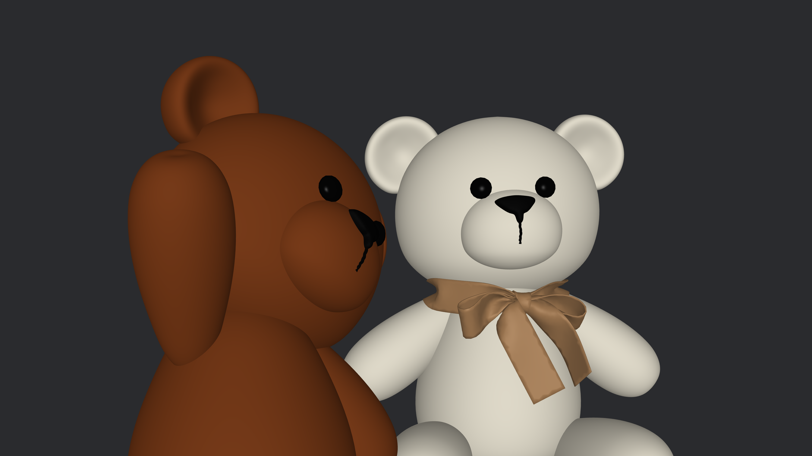
...to this?
Wool Shader is a small open-source tool that turns ordinary 3D meshes into knitted wool: it generates the yarn, the twisted plies and the fine fibres, ready for rendering.
Quick Start
There are two ways to start: render a ready-to-use scene, or knit your own mesh.
Render the finished scene. Download the Blender demo (wool_swatch_white.blend, 459 MB). It is the cream swatch scene from the end of the article ("Comparing with a real photograph"), with the yarn, all of its fibres, the needle, the lighting and the cameras. Open it in Blender 5.1 or later and render with Cycles (F12). The file contains 0.6 million fibre curves; the README text block lists the cameras.
Knit your own mesh. Get Wool Shader and build it from source. You need Windows, an NVIDIA GPU with the CUDA Toolkit, and Visual Studio 2022; the repository's README lists the details. .\build.bat run builds the app and starts it. Then open your own OBJ or PLY file and follow the four steps: Import, Knit, Fibres and Export. The complete workflow explained walks through them.
Introduction
This project started when I saw a V-Ray render featuring a green sofa and a cream-coloured knitted blanket. In this rendering, individual yarns and fine fibres are visible, giving it the convincing appearance of real wool:
Rendering wool is tricky: we need to model its complex structure and capture how light interacts with its smallest components. This brings together several challenges in computer graphics:
- Modelling: Individual fibres are spun into yarn, and several single-ply yarns can be twisted together to form a plied yarn. The yarn is then knitted into interlocking loops. It's a significant challenge to robustly map the interlocking loops on any surface. In addition, plies do not have a smooth surface: some fibres follow the ply's direction, while others stick out more randomly.
- Rendering: Wool is animal hair, and its fibres are dielectric: Light can reflect off a fibre's surface or enter it, where it may be absorbed or reflected internally before leaving again. These different paths affect the highlights. Fibre thickness, tapering (narrowing towards the tip) and how much light is absorbed or passes through significantly affect the visual plausibility.
- GPU optimization: Tens of millions of fibre segments can take up much of a consumer GPU's memory, especially once the acceleration structures are built. I reduce that cost by baking the yarn's fibre detail into texture maps and keeping the loose fuzz as geometry.
I decided to accept this challenge: Here is my render of a knitted swatch next to a photograph of real knitting:
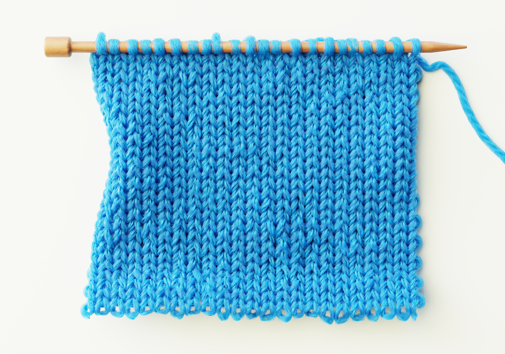
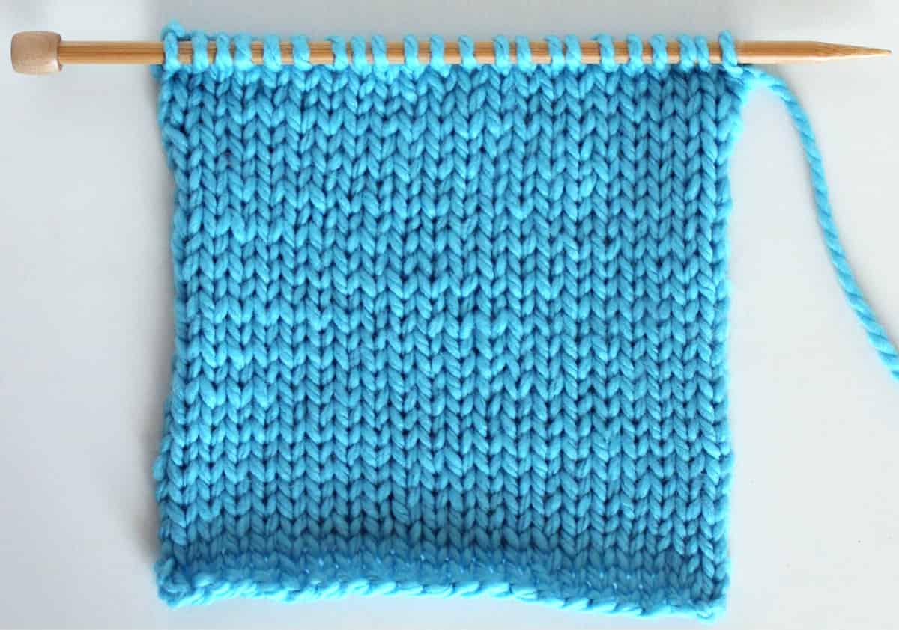
The match is not perfect: the flattened loops on the needle and the open edges of the swatch were hard to model, and the edges still give the render away. I come back to this, with the cream swatch and the angled views, in Comparing with a real photograph.
Note: I rendered my own results with my spectral path tracer. The V-Ray image above inspired this project; the other reference photographs are credited where they appear. You are welcome to check out my rendering portfolio.
Prior work
| Paper | Used in | What I use |
|---|---|---|
| Yuksel et al., Stitch Meshes (2012) | Knitting | I generate yarn curves from a stitch layout and adapt their relaxation along stitch rows. |
| Wu and Yuksel, Real-time Fiber-level Cloth Rendering (2017) | Knitting, fibres | I use their evenly spaced arrangement of plies around the yarn. The optional yarn-body prototype also combines a geometric core with individual outer fibres. |
| Zhao et al., Fitting Procedural Yarn Models for Realistic Cloth Rendering (2016) | Knitting, fibres | I use their twisted-ply construction and yarn coordinates for loose fibres. The yarn-body prototype also varies each fibre's distance from the ply centre. |
| Trunz et al., Neural Inverse Procedural Modeling of Knitting Yarns from Images (2024) | Fibres | I build the prototype’s fibre bundles in each ply’s local frame, so the fibres follow the ply as it twists. This is optional; the main workflow uses single yarn tubes with normal maps. |
| Narayanan et al., Automatic Machine Knitting of 3D Meshes (2018) | Knitting | I adapt their idea of using a surface field to guide stitch rows around a body part, progressing from one end to the other. |
| Kapllani et al., TopoKnit (2021) | Knitting | I use their description of loop connections to check that each new stitch passes through its parent loop correctly. |
What this work delivers
This work brings together:
- A guided workflow that combines existing approaches to generate detailed knitted wool and export it ready for rendering. The tool is open source and released under the MIT licence.
- A structured look at wool from a computer graphics perspective. Understanding wool's components and their light interaction enables a systematic breakdown into solvable tasks.
- Practical settings for modelling and rendering different wool types are shared in this article.
- Rendering experiments to make the wool look convincing while staying within the limits of a consumer GPU.
I put this together in the Wool Shader app, with four guided steps. Each step builds on the previous one:
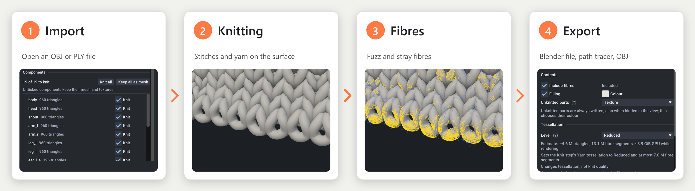
To improve usability, presets provide a starting point for different wool types, without having to adjust every parameter individually. The settings are still there to fine-tune the result.
Knitting the surface
First, a little knitting terminology. A yarn (a) consists of a single ply or several plies (b) twisted together. In multi-ply yarns, the plies follow roughly helical paths. Each ply is itself spun from small fibres (c). The fibres are the smallest components. In wool, they are individual animal hairs.
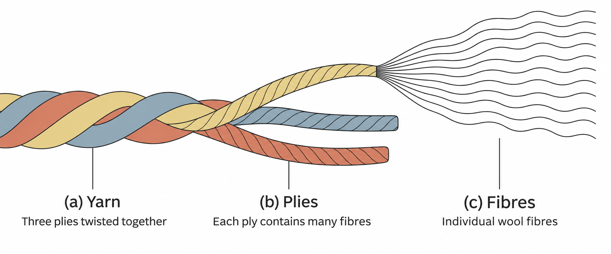
Placing and relaxing the loops
The original Yuksel et al. approach is straightforward to describe. From a given input mesh:
- Create the stitch mesh: a remeshing process where the face shape and edge types indicate which kind of loop is used.
- Relax the stitch mesh.
- Place the loops on the relaxed stitch mesh.
- Relax the loop control points.
The solver tries to bring each yarn segment closer to its rest length, the length it would have without stretching, while keeping neighbouring strands apart, limiting sharp bends and keeping the yarn close to the surface. I use these rest lengths to vary stitch tension and to introduce realistic irregularities, which are covered later in more detail.
The diagram shows the whole way from the input mesh to the finished loops.
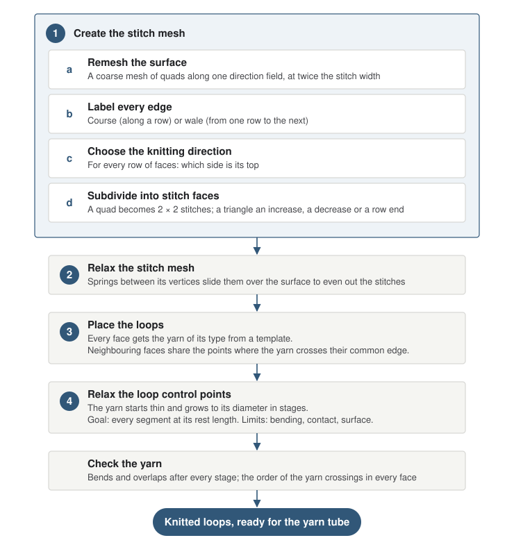
I found this a real challenge to implement, and I only really covered the stockinette loop type. There's plenty of existing work for the interested reader; see Prior work.
Also note that the solver is slow and needs a lot of memory. In my tests, about 3,000 stitches in one connected piece were the most that fitted into 8 GiB of GPU memory, and only with an experimental storage option. Settling them took 12 to 24 minutes on a consumer GPU.
Details: the comparison with Yuksel et al., the GPU solver and the source files
What the related work does, and what I do
| What Yuksel et al. do | Do I use it? | What I do, and why |
|---|---|---|
| Stitch mesh. Every face of a mesh is one stitch, and the yarn is generated face by face. | Yes | I build the stitch mesh by remeshing the surface (step 1), following Wu et al. (2018): a coarse mesh of quads, its edges labelled course or wale, a knitting direction for every row, then the subdivision into stitch faces. I only cover stockinette faces, with increases, decreases and row ends. |
| Mesh relaxation. Springs between neighbouring stitches (stretch, shear and a strut along the columns) slide the stitches over the surface until the forces balance. | Yes | The same springs, with the paper's stiffness values, move the vertices over the input surface (step 2). Their rest lengths come from my stitch width and height. |
| Yarn relaxation as a physical simulation. The yarn is an elastic rod with mass, damping and contact forces, moved forward in time steps. | No | An optimisation that adjusts the yarn towards its target lengths while limiting bending, contact and movement away from the surface. |
| A rest length for every loop: the amount of yarn the loop would like to hold. | Yes | One rest length for every yarn segment. This is the handle that the irregularities use later. |
| Contact as a soft force. Two yarns push each other apart, but they may press into each other. | No | A hard minimum-distance constraint between sampled yarn segments. The final yarn and tube geometry are checked again after relaxation. |
| No pull-through. A yarn must not pass through another one while it moves. They limit how far a point may move per step and test for intersections. | Yes, in my own way | For candidate pairs of sampled yarn segments, I check the motion throughout each proposed step. A step that would create a new crossing is shortened or rejected. The check after the relaxation then tests the order of the yarn crossings in every face again. |
| Keeping the overall shape of the garment. | Yes | A weak pull keeps every control point near the place where it was at the start of each solver stage. |
Introducing yarn irregularities
Generated knitting looks too uniform and perfect: that's because every stitch has the same shape and the resulting surface is too smooth and even.
Real hand knitting is uneven in many small ways: some stitches are tighter than others, columns of stitches drift up and down, single loops stand out and the yarn itself is thicker in some places.
That means for plausibility, we must introduce irregularities that also a real person would do during the real knitting process: So it's basically about introducing small errors and deviations.
The solver from the last section makes this possible by manipulating the rest lengths it tries to optimize for: following this approach, the solver stays the same, but its input is slightly altered with random values based on a fixed seed (to allow for reproducing the same results).
These irregularities are applied in the Knit step's default route, which tiles the surface with knitting charts. The stitch-mesh route above does not apply them.
What goes into the solver, and what the irregularities change
| Solver input | Regular knit | With irregularities |
|---|---|---|
| Positions of the control points at the start | As placed: every loop is the same | Changed. Every loop is made a little smaller or bigger, leaned, lifted or shifted |
| Rest length of every segment | The length the segment was placed with | Changed. Shorter in a tight stitch, longer in a loose one |
| Which stitches may move | The ones that failed the check, plus their neighbours | Changed. All of them |
| The three limits: bending, contact, surface | Unchanged | |
| The solver itself | Unchanged |
The important input is the rest length. If I only changed the shape of a loop, the solver would pull it back wherever it moves the yarn: every segment would still want the length it was placed with. So I change both, the loop and the rest lengths of its segments. Now each stitch pulls towards its own lengths, and the unevenness survives the relaxation.
The picture shows the two main changes on a single stitch:
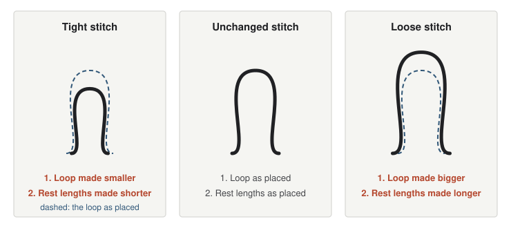
The parameters
Each parameter is one kind of unevenness. The four presets set them all at once:
The irregularity parameters and their values in the four presets.
| Parameter | What it does | What it changes | Off | Natural | Hand-made | Rustic |
|---|---|---|---|---|---|---|
| Uneven stitches | How much tighter or looser a stitch may be. Every plain stitch also leans a little. A tight stitch is drawn a little thinner, a loose one thicker. | Positions, drawn thickness, rest lengths | 0 % | 10 % | 20 % | 32 % |
| Column shift | In UV-chart layouts, neighbouring columns of stitches sit a little higher or lower. | Positions | 0 mm | 0.35 mm | 0.6 mm | 1.0 mm |
| Column run | How many rows a column keeps about the same shift. | Positions | 6 rows | 8 rows | 6 rows | 5 rows |
| Raised loops | A few stitches get at least 15 % more yarn and stand out of the surface. | Positions, drawn thickness, rest lengths | 0 / cm² | 0.1 / cm² | 0.3 / cm² | 0.7 / cm² |
| Loop height | How far the tallest raised loop is lifted. Each one is lifted between half and all of this. | Positions | 0 mm | 0.5 mm | 0.8 mm | 1.1 mm |
| Fabric wave | A slow rise and fall of the whole fabric. | Positions | 0 mm | 0.12 mm | 0.25 mm | 0.4 mm |
| Thick and thin spots | The yarn is drawn thicker or thinner over a short stretch. A thick spot is also slack, a thin one stretched. | Positions, drawn thickness, rest lengths | 0 / cm² | 0.15 / cm² | 0.4 / cm² | 0.8 / cm² |
| Spot strength | How much thicker or thinner the strongest spot is. Each one gets between half and all of this. | Positions, drawn thickness, rest lengths | 0 % | 15 % | 25 % | 40 % |
| Spot length | How long a spot is along the yarn. | Drawn thickness | 12 mm | 10 mm | 14 mm | 16 mm |
The rest lengths are measured on the loop after it has been leaned, lifted, waved and shifted, so these moves survive the solver too. Uneven stitches, raised loops and spots then make the rest lengths shorter or longer. The drawn thickness stays between 0.5 and 1.5 times the yarn's radius, and separate ply tubes are always drawn round.
The comparison between regular and hand-made knitting shows how much these irregularities affect perceived realism. I deliberately say 'perceived' because realism also depends on our experience of real things and what we expect them to look like. The unevenness feels 'familiar': it matches the wool we have seen and touched. Physical accuracy matters, but it is only part of what makes a material look convincing.
Settings used for these renders
| UI setting | Off | Natural | Hand-made | Rustic |
|---|---|---|---|---|
| Knit step | ||||
| Gauge preset | Dense | Dense | Dense | Dense |
| Yarn geometry: Construction | Single tube | Single tube | Single tube | Single tube |
| Appearance: Ply texture | 3 plies | 3 plies | 3 plies | 3 plies |
| Hand-made preset | Off | Natural | Hand-made | Rustic |
| Uneven stitches | 0 % | 10 % | 20 % | 32 % |
| Column shift | 0.00 mm | 0.35 mm | 0.60 mm | 1.00 mm |
| Column run | 6 rows | 8 rows | 6 rows | 5 rows |
| Raised loops | 0.00 / cm² | 0.10 / cm² | 0.30 / cm² | 0.70 / cm² |
| Loop height | 0.00 mm | 0.50 mm | 0.80 mm | 1.10 mm |
| Thick and thin spots | 0.00 / cm² | 0.15 / cm² | 0.40 / cm² | 0.80 / cm² |
| Spot strength | 0 % | 15 % | 25 % | 40 % |
| Spot length | 12 mm | 10 mm | 14 mm | 16 mm |
| Fabric wave | 0.00 mm | 0.12 mm | 0.25 mm | 0.40 mm |
| Solve quality | Draft + settling | Draft + settling | Draft + settling | Draft + settling |
| Yarn tessellation | Custom: 16 sides, 0.20 mm rings | Custom: 16 sides, 0.20 mm rings | Custom: 16 sides, 0.20 mm rings | Custom: 16 sides, 0.20 mm rings |
Settings as the knit_viewer shows them; every value not listed is the viewer's opening default. Render: 1536 × 1024, 500 spp, OptiX denoiser; patch_lab's studio (key and fill quad lights, sky 0.08); top view, close-ups a 22 mm field.
Yarn thickness
My first results with single yarn were disappointing because I could see straight through the gaps between the yarns. Keeping the original mesh underneath to fill those gaps helped, but introduced another problem: its colour had to match the yarn perfectly. So I abandoned that idea.
I then tried increasing the yarn diameter and discovered how much difference a small change in thickness could make. With the stitch spacing unchanged, thicker yarns fill more of the gaps and give the knitted surface a denser appearance. I added three presets — thin, medium and dense — for user convenience.


Settings used for these renders
| UI setting | Thin | Medium | Dense |
|---|---|---|---|
| Knit step | |||
| Gauge preset | Thin | Medium | Dense |
| Yarn diameter | 1.16 mm | 1.50 mm | 1.86 mm |
| Yarn geometry: Construction | Single tube | Single tube | Single tube |
| Appearance: Ply texture | Off | Off | Off |
| Hand-made preset | Hand-made | Hand-made | Hand-made |
| Solve quality | Final | Final | Final |
| Yarn tessellation | Fine | Fine | Fine |
| Fibres step | |||
| Wool preset | Soft wool | Soft wool | Soft wool |
| Density preset | Custom | Custom | Custom |
| Density | 135 / mm | 135 / mm | 135 / mm |
| Island preset | Natural | Natural | Natural |
| Export step | |||
| Include fibres | off | off | off |
Settings as the knit_viewer shows them; every value not listed is the viewer's opening default. Render: 1024 × 1024, 500 spp, OptiX denoiser; photon_path_tracer with the watercolor scene's sky HDRI (intensity 0.5, sun from the left), only the white bear's head and muzzle.
Making it look like wool
The first rendered knitted results left me unimpressed. Even with geometric plies, the yarn still looked like a collection of smooth tubes.
It was clear that this was not an issue of an incorrect material choise: something else was missing...
Looking more closely at the original V-Ray render, I noticed how much the fine fibres contributed. Some were coloured, others almost transparent. They caught highlights and cast tiny shadows on each other.
It became clear that what makes wool so convincing are the tiny fibres sticking out of its surface. Together they create the familiar fuzzy appearance. The catch is that for close-ups, hundreds of thousands or even millions may be needed.
I decided to model fibres in two ways:
- Oriented fibres that roughly follow the yarn's direction
- Stray fibres that stick out in more random directions
In the simplest setup, each fibre has a position, direction, length, thickness and curvature. A fibre is modelled as connected line segments. The user can control how many fibres are generated, and the balance between oriented and stray fibres. To keep the geometry manageable, unsuitable placements (spawning positions) are rejected and thus limit the total number of segments.


Small changes to the fibres can make wool look softer, fluffier or coarser. Density controls the amount of fuzz, while length, thickness, curvature and the balance between oriented and stray fibres change its character.

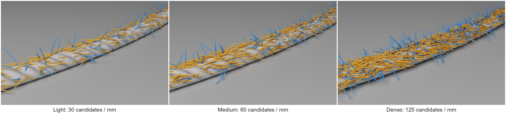
Ideally, the generated fibres would not intersect each other or the yarn. However, millions of intersection tests turned out to be too expensive to compute, so I had to drop the idea of intersection checks.
The default path still cuts or rejects fibres that penetrate the yarn too deeply or pass behind the fabric, but it does not prevent every intersection. Small remaining intersections are rarely noticeable in renders.
Obviously, fibres also start by growing outwards from their local yarn surface rather than directly into it.
Tapered fibres
In my first teddy renders, the fibres looked like wire because they stayed thick right to the end. I make them thinner towards their tips to avoid this. This section explains how I do that.
Tapering is used by Soft, Fluffy and Hard wool. The fibre keeps its thickness for most of its length, then gets thinner over the last 20% along a smooth cosine curve. The taper covers at least eight times the root diameter, unless the visible fibre is shorter.
For Soft wool, the tip radius is 30% of the root radius. Fluffy and Hard wool use 10%. The renderer's linear factor is switched off for these fibres, so nothing is tapered twice. Because a late-tapered fibre keeps its thickness for longer, it covers more of the image than a whole-fibre-tapered one of the same root thickness. The tapered profiles therefore use thinner fibres, chosen so that each profile covers about the same area as before.

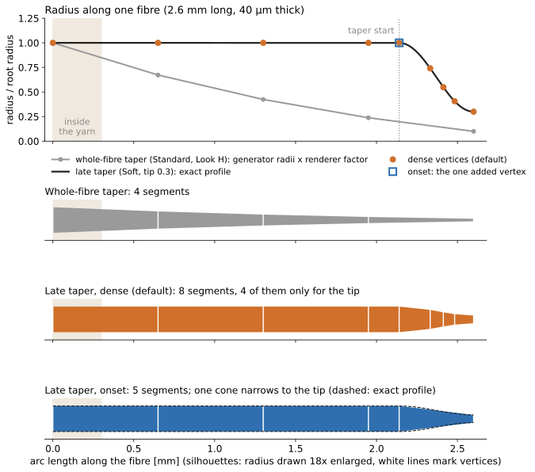
What a taper changes is easiest to see where single fibres stand out against the sky. The two renders below show the same 5 mm view of the white teddy's muzzle. In the first, every fibre keeps its own root thickness to its end. In the second, the fibres get thinner near their tips. Only their radii differ: fibre positions, root thicknesses, materials, lighting and sampling are identical, and the renderer's own taper is switched off in both.
I used a stronger taper here to make the difference visible: a cosine taper over the last 40% of the visible length, down to 12% of the root radius, with the same minimum length of eight root diameters. This is an illustration, not a wool preset. Soft wool uses a gentler taper: 20% and a 30% tip radius.


Introducing fibre irregularities
Uniform fibre placement has the same problem as the initial knitting results: it is too even. Every millimetre of yarn carries the same amount of the same fibres. Real wool is fuzzier in some places, pressed flat in others, and rubbed thin where it is handled a lot.
Fibre islands add this, and the idea is the same as for the knitting: the fibre generator stays the same; I only change what I feed it. An island is a patch of the fabric that changes how the fibres are generated. Fuzzy and matted islands change the fibres themselves: their length, how many are strays and how flat they lie. Worn islands reduce how many fibres are kept.
This is what fibre islands look like. The ear is lit from behind, because fuzz shows best in silhouette. The knit, the light and the camera are the same in all seven renders; only the fibres differ.
The first three renders show the presets described below, from the faintest to the strongest. Natural is meant to be faint. With Worn, the strays stand long and loose in one patch, while the rest of the rim keeps its short fuzz. Well-loved raises a larger patch and thins the fuzz elsewhere.
The fourth render is the even fuzz without islands, for comparison. The last three show what is inside an island. For each kind, I covered the whole ear with islands of that kind alone, at full strength.


What goes into the fibre generator, and what an island changes
| Generator input | Even fuzz | Inside an island |
|---|---|---|
| How many fibres are kept | The density setting | Changed in a worn island: fewer |
| Share of stray fibres | The wool profile's | Changed in a fuzzy or matted island: more |
| Fibre length | The wool profile's | Changed. Longer in a fuzzy island, shorter in a matted one |
| How far a stray stands off the yarn | The wool profile's | Changed in a matted island: flatter |
| The yarn, the checks and the generator itself | Unchanged |
There are three kinds of island:
| Kind | What it looks like | What it changes at its centre, at full strength |
|---|---|---|
| Fuzzy | A fluffier patch | Fibres up to 2.5 times as long; 35 % of the otherwise oriented fibres become strays |
| Matted | A patch pressed flat | Every fibre is a stray that lies 60 % flatter and is 30 % shorter |
| Worn | A bald patch where the yarn shows | No fibres are kept |
The parameters
The four presets set them all at once:
| Parameter | What it does | Off | Natural | Worn | Well-loved |
|---|---|---|---|---|---|
| Islands | How many islands there are, on average. | 0 / cm² | 0.06 / cm² | 0.15 / cm² | 0.3 / cm² |
| Island size | How wide an island is. Each one is drawn between 70 and 130 % of this; the three smaller spheres at its rim can reach further out. | 12 mm | 10 mm | 14 mm | 18 mm |
| Island strength | How far the centre of an island departs from the fuzz around it. | 0 % | 40 % | 70 % | 100 % |
| Fuzzy / matted / worn share | How often each kind is drawn. | 1 : 1 : 1 | 2 : 1 : 1 | 1 : 2 : 1 | 1 : 1 : 2 |
The islands are independent of the knitting irregularities: they change only the fibres, never the yarn. The comparison renders in Introducing yarn irregularities combine both: the Natural, Hand-made and Rustic patches there use the Natural, Worn and Well-loved islands.
Different Wool Profiles
The Wool Shader provides several presets for basic wool profiles. Each profile defines a complete set of parameters, which together create the appearance of a specific wool type. I specified these parameters empirically during my experiments. They are not measured material properties.
A wool profile describes the character of the fibres, the ply relief of the yarn and how much light the yarn lets through. The colour and the fibre density are separate settings. The density presets place Light 30, Medium 60 and Dense 125 fibre candidates per millimetre of yarn, and fibre islands add patches of fuzzier, matted or worn fibres on top.
The wool profiles and their values.
| Standard | Soft (default) | Fluffy | Hard | Mohair | |
|---|---|---|---|---|---|
| Stray fibres | 3 % | 10 % | 8 % | 10 % | 25 % |
| Fuzz length, min / median / max [mm] | 1.2 / 2.6 / 5.0 | 1.2 / 2.6 / 5.0 | 1.5 / 3.0 / 6.0 | 0.4 / 0.8 / 1.6 | 3.0 / 6.0 / 12 |
| Fuzz thickness [µm] | 80 | 40 | 40 | 40 | 25 |
| Fuzz at a neighbouring stitch | cut | cut | cut | cut | lies on it |
| Longest stray [mm] | 6 | 6 | 45 | 3.2 | 15 |
| Stray thickness [µm] | 45 | 23 | 28 | 36 | 20 |
| Stray curl radius [mm] | 0.5 | 0.5 | 1.5 | none | 0.8 |
| Generated segments per fibre, max | 24 | 24 | 48 | 6 | 48 |
| Taper | whole fibre | last 20 %, tip 0.3 | last 20 %, tip 0.1 | last 20 %, tip 0.1 | last 30 %, tip 0.1 |
| Ply relief | 1.0 | 0.6 | 0.6 | 1.0 | 0.4 |
| Yarn translucency | 0 | 0.3 | 0.3 | 0.15 | 0.5 |
| Fuzz shading | hair | hair | hair | diffuse + sheen | hair |
The segment limit applies before export. Tapering can add more segments near the tips.
The renders below put four of the profiles on the teddy bears of the opening image, seen from the same camera in the same light. The knit, the yarn colours and the room are the same in all four; only the wool profile changes. Soft is the look of the opening image. Hard keeps its short fibres close to the yarn, so the stitches stand out. Mohair and Fluffy raise a halo of long fibres that catches the window light along the silhouettes. Standard is left out: at this distance it looks much like Soft.


Settings used for these renders
| UI setting | Soft | Hard | Mohair | Fluffy |
|---|---|---|---|---|
| Knit step | ||||
| Object | Teddy bears, both | Teddy bears, both | Teddy bears, both | Teddy bears, both |
| Gauge preset | Dense | Dense | Dense | Dense |
| Yarn geometry: Construction | Single tube | Single tube | Single tube | Single tube |
| Appearance: Ply texture | 3 plies | 3 plies | 3 plies | 3 plies |
| Hand-made preset | Rustic | Rustic | Rustic | Rustic |
| Solve quality | Final | Final | Final | Final |
| Yarn tessellation | Reduced | Reduced | Reduced | Reduced |
| Fibres step | ||||
| Wool preset | Soft wool | Hard wool | Mohair | Fluffy wool |
| Stray preset | Loose | Aligned | Loose | Long tail |
| Density preset | Custom | Custom | Custom | Custom |
| Density | 135 / mm | 135 / mm | 135 / mm | 90 / mm |
| Island preset | Natural | Natural | Natural | Natural |
| Export step | ||||
| Include fibres | on | on | on | on |
| Filling | on | on | on | on |
| Wool preset only | ||||
| Fuzz hair colour | yarn | layer | yarn | layer |
| Renderer | ||||
| Camera | Bear DoF | Bear DoF | Bear DoF | Bear DoF |
| Exposure | 2.0 | 2.0 | 2.0 | 2.0 |
Settings as the knit_viewer shows them; every value not listed is the viewer's opening default, and every fibre value not listed is the wool preset's own (see the profile table above). All four use one knit; only the Fibres step differs. Fluffy uses 90 fibre candidates per millimetre instead of 135: at 135, its 34 million exported fibre segments did not fit into my GPU's 12 GB. The yarn albedos are the export's (white 0.87, 0.76, 0.63; brown 0.42, 0.20, 0.08); with the hair colour "layer", Hard and Fluffy draw their fuzz as a thin layer over the yarn, which makes the brown bear read darker. Render: 1920 × 1080, 500 spp, OptiX denoiser, 32 bounces; the watercolor room and the opening image's camera, lit by the sunflowers sky (HDRI, intensity 3.0) through the two windows. Exposure 2.0 matches the opening image, which was rendered with the renderer's earlier, brighter tone curve. Larger images did not fit into 12 GB. Renderer revision: dd8870fda with local changes. Rendered on 22 and 23 November; made with tools/article/make_wool_types.py.
Yarn and fibre materials
By this point I had plenty of yarn and fibres, and it was time to get the materials right in my spectral path tracer. For me, the easiest and most enjoyable part!
The yarn tubes use my renderer's 'fabric' material: a diffuse body with a sheen effect: a cloth-like rim at grazing angles, tinted to the yarn's colour. A normal map adds the ply relief.
I also let some light pass through the tube, which helps when it is lit from behind: a share of 0.15 for Hard, 0.3 for Soft and Fluffy, and 0.5 for Mohair. This is a simple approximation, without volume scattering or a thickness-dependent absorption: thicker yarn lets through the same share as thinner yarn.
The individual fibres use a hair material, based on pbrt-v4's hair model (Chiang et al., 2016). Light can reflect off the surface, pass through the fibre or reflect internally before leaving. Two roughness controls set how broadly it scatters along and around the fibre.
This part of my fibre_outgoing function shows how much light the first three paths carry, simplified to one wavelength:
// F is Fresnel reflectance at the fibre surface.
// sigmaA is absorption; the refracted path length is measured in fibre radii.
float T = expf(-sigmaA * distanceInRadii); // Light surviving one crossing.
float transmit = 1.f - F;
float R = F; // Reflect off the surface.
float TT = transmit * transmit * T; // Enter, cross the fibre, leave.
float TRT = TT * F * T; // Reflect inside, cross again, leave.
The BSDF accounts for these internal paths without tracing each bounce inside the fibre.
Lit from behind
Wool fibres are dielectric. Light can reflect off their surface or refract into them. Some light is absorbed, while some leaves the fibre again, including on the opposite side. This contributes to the translucent appearance when wool is lit from behind.
Plies are made of many fibres, so light may interact with several fibres before leaving the bundle. Longer paths give more opportunity for absorption, and scattering can redirect light back towards the illuminated side. A thick ply therefore often transmits less light than an individual fibre. The result also depends on the fibre colour and how tightly the fibres are packed.
For individual fibres, my renderer uses a hair material that accounts for reflection, refraction and absorption, including paths with internal reflections. These effects are evaluated by the shading model rather than by tracing every event inside the fibre.
For yarn and ply tubes, I use a simpler approximation. A weighted random choice determines whether light is reflected or transmitted. Transmission is diffuse, so the outgoing direction is not the same as the incoming direction. This does not simulate the internal fibre structure, and the transmission amount does not depend on the tube's thickness.
This is how translucent leaves are often rendered, applied twice: at each wall of the tube, the light continues in a random direction that does not depend on where it came from. Nothing is refracted.


Making it fit on the GPU
There are basically three levels of detail for modelling yarn, starting with the finest geometric detail:
Yarn built from individual fibres
The most detailed representation, intended for very close views. Each ply consists of long, thin fibres modelled as line segments. At this level, individual fibres become visible in the silhouette and between neighbouring fibres. However, a lower fibre count might result in visible gaps and poor occlusion. To fill those gaps, the fibre model can include a simpler core surrounded by fibres.
This fibre geometry is also used to create the baked yarn texture maps.
Yarn made from separate ply tubes
Modelling the plies as separate geometry gives the yarn a realistic silhouette and creates gaps that naturally produce occlusion and shadows. The Wool Shader supports up to four geometric plies. Using real ply geometry makes wool look more realistic, but also increases the memory footprint. Depending on the fibre count, the plies might be occluded so that the higher visual detail might not pay off.
The same ply shape is also used to generate the procedural ply normal map.
Yarn as a single tube
The simplest approach, offering a good trade-off between realism and performance. The default configuration for the Wool Shader.
In most cases, the reduced geometric detail is compensated for by texture mapping, faking the look of more geometric detail. In addition, loose fibres partially occlude the yarn, so higher geometric detail often does not pay off except in very close views.
Here's a compact overview:
| Construction | What it is |
|---|---|
| Single tube | One tube per yarn. A ply texture can show the plies as maps on the tube. The default. |
| Ply tubes | 2 to 4 real ply tubes inside the yarn. |
| Fibre strands | 1 to 3 plies of long fibres in place of the tube. |
| Fibre maps | One tube per yarn, with maps baked from those same fibres. |
The fibres of the last two are set up in the Fibres step.
These images show all 3 versions:


Settings used for these renders
| UI setting | Single strand | 3 plies | Fibre yarn |
|---|---|---|---|
| Knit step | |||
| Gauge preset | Dense | Dense | Dense |
| Yarn geometry: Construction | Single tube | Separate ply tubes | Single tube |
| Yarn geometry: Ply tubes | - | 3 | - |
| Appearance: Ply texture | Off | (ply tubes) | Off |
| Hand-made preset | Hand-made | Hand-made | Hand-made |
| Solve quality | Final | Final | Final |
| Yarn tessellation | Fine | Fine | Fine |
| Fibres step | |||
| Wool preset | Soft wool | Soft wool | Soft wool |
| Density preset | Custom | Custom | Custom |
| Density | 135 / mm | 135 / mm | 135 / mm |
| Island preset | Natural | Natural | Natural |
| Export step | |||
| Include fibres | off | off | off |
| Filling | on | on | off |
| Settings file only | |||
| Yarn body | off | off | on |
| Yarn body: plies / fibres per yarn | - | - | 3 / 250 |
| Yarn body: fibre diameter | - | - | 30 µm |
| Yarn body: shell depth / irregularity / core | - | - | 0.60 / 2 / opaque |
Settings as the knit_viewer shows them; every value not listed is the viewer's opening default. Render: 1024 × 1024, 500 spp, OptiX denoiser; photon_path_tracer with the watercolor scene's sky HDRI (intensity 0.5, sun from the left), only the white bear's head and muzzle; the fibre yarn with 32 bounces, its close-up a 5 mm field. Include fibres controls the loose fuzz, not the structural fibres in the fibre-yarn prototype. Filling records the initial export setting; the shot-preparation script removes the filling mesh for these close-ups.
Reducing yarn geometry
Even at fairly low resolution, the triangle counts for plies become significant quickly. This table shows the triangle count for the two teddy bears: even at the lowest resolution, there are already about 5.8 million triangles.
| Yarn tube resolution | Triangles, one yarn tube | Triangles, two ply tubes | Triangles, three ply tubes | Triangles, four ply tubes |
|---|---|---|---|---|
| Coarse | 5,763,060 | 15,835,712 | 24,766,648 | 34,958,176 |
| Reduced (default) | 7,684,080 | 21,114,216 | 33,022,128 | 46,610,816 |
| Medium | 15,368,032 | 47,506,896 | 74,299,632 | 104,874,180 |
| Fine | 61,471,840 | 158,355,940 | 247,664,920 | 349,579,840 |
Real plies look better up close, but they also add a lot of geometry. But this level of detail is rarely ever needed:
from farther away, a single tube with a normal map is often enough. That's why I made the combination 'reduced single ply geometry plus normal map' the default.
The downside is that the 'single-tubed' yarn keeps its smooth silhouette, without the real gaps and shadows between plies. Discretization artifacts between the ply segments will show only when the camera is close. In addition, fibres cover parts of the yarn and cast shadows on it, which helps hide the missing ply geometry.


Settings used for these renders
| UI setting | 3 plies | Normal-mapped | Normal map + fibres |
|---|---|---|---|
| Knit step | |||
| Gauge preset | Dense | Dense | Dense |
| Yarn geometry: Construction | Separate ply tubes | Single tube | Single tube |
| Yarn geometry: Ply tubes | 3 | - | - |
| Appearance: Ply texture | (ply tubes) | 3 plies | 3 plies |
| Hand-made preset | Hand-made | Hand-made | Hand-made |
| Solve quality | Final | Final | Final |
| Yarn tessellation | Fine | Fine | Fine |
| Fibres step | |||
| Wool preset | Standard wool | Standard wool | Standard wool |
| Density preset | Custom | Custom | Custom |
| Density | 135 / mm | 135 / mm | 135 / mm |
| Island preset | Natural | Natural | Natural |
| Export step | |||
| Include fibres | off | off | on |
Settings as the knit_viewer shows them; every value not listed is the viewer's opening default. Render: 1024 × 1024, 500 spp, OptiX denoiser; photon_path_tracer with the watercolor scene's sky HDRI (intensity 0.5, sun from the left), only the white bear's head and muzzle.
Baking the fibres into the yarn
With millions of fibres, a big part of the GPU memory goes into the acceleration structures, not into the fibres themselves. The blue swatch is the extreme case. Its yarn is made of real fibres, about 400 per yarn. With the fuzz, that is 34 million strand segments for a 12 cm swatch, and close to 5 GB of acceleration structures.
So what can be done is to keep those fibres as the source of truth, but bake each yarn's fibre surface into texture maps on a plain yarn tube. Only the fuzz, the oriented and stray fibres, stays real geometry.
I developed this bake for my tool by shooting rings of rays towards the yarn's axis and storing the visible fibre detail on a tube. This is my own contribution and was not motivated by existing work.
Related work also uses ray tracing and texture maps to replace fibre geometry. My approach bakes each generated yarn into its own two-dimensional atlas, using the known bend and compression to map the fibres back to a straight yarn.
Related work on replacing fibre geometry with texture maps.
| Related work | What it does | What I do differently |
|---|---|---|
| Montazeri et al., A Practical Ply-Based Appearance Model of Woven Fabrics (2020), Section 3.3 | Ray-trace a ply's cross-section to find visible fibres and store their normals in a 1D texture, with tangent and shadowing information. Blend several cross-sections along the ply to add variation. | I shoot rays at the generated 3D fibres around the whole yarn, not one ply. Each yarn gets its own 2D maps along its length and circumference. The renderer uses one yarn tube, rather than separate ply tubes. |
| Sperl, Homogenizing Yarn Simulations (2022), Appendix C.4.3, Figure C.5 | Bake ply and fibre geometry into normal and ambient-occlusion textures, then stretch, tile and shear them to show twisted plies on yarn geometry. | I bake each generated yarn instead of tiling a single-ply texture. The bake also stores coverage and normal spread for the highlight and roughness. Loose fuzz stays as geometry. |
What it buys
This is the main result. I rendered the blue swatch twice:
- with its yarn as explicit fibres,
- and with its yarn as a baked tube.
The knit and the loose fuzz were the same. The renderer's peak memory fell from 7.1 GiB to 2.9 GiB:
| Rendered as fibres | Rendered as baked maps | |
|---|---|---|
| Strand segments | 34.1 M | 2.3 M (fuzz only) |
| Acceleration structures | 4.9 GB | 0.4 GB |
| Textures | 6 MB | 741 MB |
| Renderer peak memory | 7.1 GiB | 2.9 GiB |
| Samples per second, mid camera | 3.6 | 7.0 |
| Samples per second, close-up | about 3.0 | about 4.3 |
Close up, the difference is obvious. The fibres show single bright strands, small gaps and a soft, translucent body. The maps show the twisted plies and their fibre bundles as streaks with dark gaps between them, but no single bright strands, and the yarn renders about half as bright.


In the earlier pilot comparison, the two renders looked similar to me from the photo's viewpoint. The stitches, ply twist and fuzz were all there, but the images were not identical. Over three viewpoints, the colour difference on the fabric at quarter resolution was 5 to 8 ΔE, and the structural similarity (SSIM) was 0.66 to 0.80.


1200 × 1200, 128 spp, the reference photograph's camera.
How the bake works
The yarn's fibres are built around a straight "nominal" yarn axis and then bent and squeezed along the knitted yarn's path. The tube that replaces them uses the same path: its texture coordinate u runs along the yarn and v around it. Because I know the bend, I can invert it. Every fibre point lands exactly on the tube's own (along, around) chart, so a "helical scan" of the yarn becomes a regular grid of texels in the straight yarn.
At each texel I shoot 3 × 3 rays from just outside the yarn towards its axis and keep the first fibre each ray hits. From those hits I bake:
- a normal map: the average fibre normal, in the tube's tangent space;
- a coverage map: the share of rays that hit a fibre, used to scale the highlight's normal-incidence reflectance;
- an ambient-occlusion map: a horizon scan over the baked height at the scale of a ply, which darkens the valleys between plies, times the light that reaches each hit through the fibres above it, which darkens the fibres below the surface;
- the spread of the normals within the texel, which I turn into roughness (Toksvig, 2005), so fibres too fine for a texel still roughen the highlight.
This is only an approximation to coverage: it weakens the highlight, but does not fully mask it at grazing angles.
A ray that misses every fibre looks through a gap. It takes the height and normal of the ply's core, the round body of the ply inside its shell. If it misses the cores as well, it stops at half the yarn radius, between the plies, and takes the normal of the nearest ply's side. In my first version, these rays kept the tube's own normal, and a third of the swatch's texels showed a smooth, plain tube.
The light through the fibres falls off as exp(−depth / ℓ), with the depth measured below the highest fibres nearby. Here ℓ = π d / (4 φ) is the mean free path between fibres of diameter d at the shell's packing φ: 0.1 mm for the swatch.
Only geometry is baked. The darkening by occlusion and the roughness floor are material settings applied when the scene is exported, so moving a slider never starts a new bake. The renderer caps a texture side at 4096 texels, and a 50 cm yarn at a 40 µm texel is about 12,500 texels long. Each yarn's chart is therefore cut into strips of 4096 texels and stacked into one atlas.

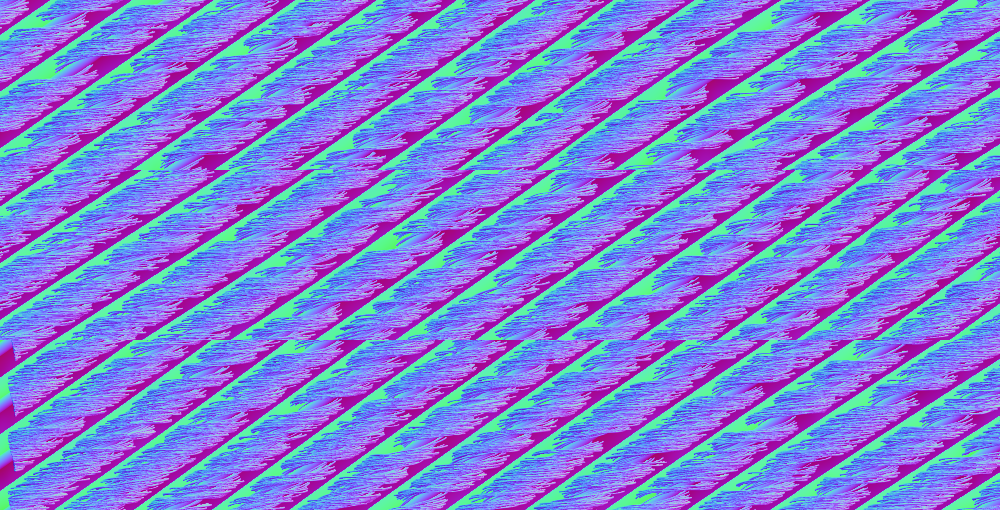
Known limitations
- Texture compilation. The renderer compiles the 98 map textures on a package's first render. For the swatch, that takes about 80 seconds, once for each new set of map files. A slider that changes the occlusion darkening or the roughness floor rewrites some of those files, so the render preview may pay part of that cost again.
- Texture memory grows with yarn length. The swatch's 12 m of yarn need 741 MB. A single teddy piece holds 52 m of yarn, which would need gigabytes at the same texel. Large objects will need a coarser texel.
- The bake itself took under three minutes on the CPU for the swatch's 24 yarns.
- Soft wool rendered as fibres is the expensive case: 65 million body segments. Its 128-spp close-up did not finish within 25 minutes.
In that earlier test, baked maps needed well under half the peak memory and sampled about twice as fast from the mid camera. For close-ups of single fibres, the fibres remain worth their cost.
Comparing with a real photograph
At the end of the project, I wanted to compare my results with real knitting samples. This was when I stumbled upon the incredible sample photographs by Kristen McDonnell of Studio Knit. Her page sure is a source of endless inspiration for knitting-obsessed computer graphics enthusiasts!
I used her stockinette-stitch photographs as visual references for a small swatch scene. I modelled the swatch and needle geometry myself and rendered the scene with my spectral path tracer.
The blue and cream swatches are shown below beside their reference photographs. Use the controls to switch from the top view to the angled camera view. The cream comparison keeps the same top-view photograph, since there is no matching angled reference in this set.
Blue swatch

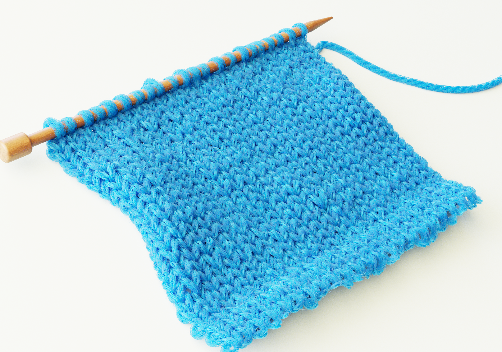

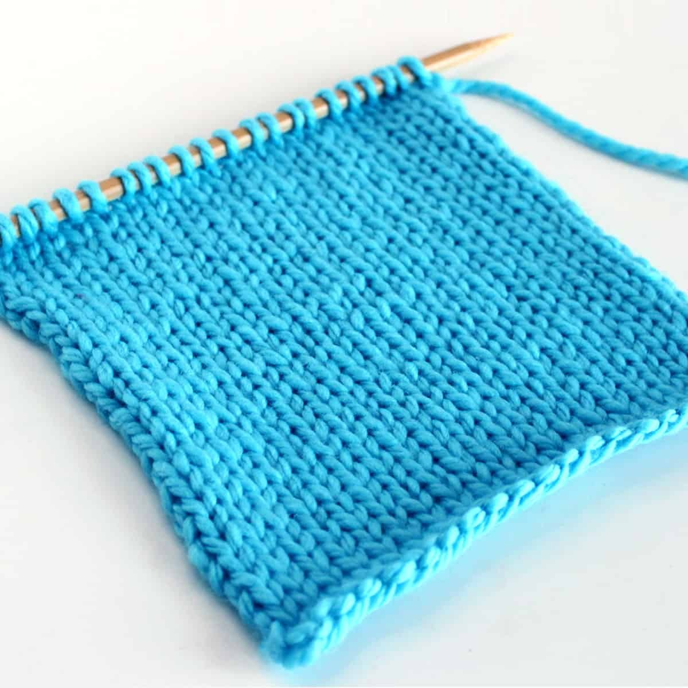
Two things are worth a close look:
- The ply twist. In the photograph, every strand shows the diagonal lines of its twisted plies. The rendered yarn carries the same twist.
- The loops around the needle. The top row is still on the needle. In the photograph, each loop lies flat against the wood and widens into the stitch below it. Mine follow the same path, but a few stand too high.
Cream swatch


Reference photographs: Kristen McDonnell of Studio Knit. See her original Stockinette Stitch tutorial. The blue top-down reference is the supplied working crop; the other two photographs are shown in full. My renders are separate work.
The four renders
Here are the four renders on their own, so you can look at the yarn, fibres and edges without the reference beside them.
This is the swatch scene in my renderer, with its cameras, materials and render output:

My swatch model is a study of the fabric's appearance, rather than a verified reconstruction of its knitting structure. I had to learn this the hard way while modelling the wool patch: it turned out to be extremely difficult to match the flattened loops around the wooden needle, the bumps in the patch and, most of all, its open edges.
I am happy with the results, but in the end I spent two full days modelling and applying Kristen's professional feedback. Simulating the real, physical knitting process is a topic and a research field of its own.
The complete workflow explained
A user-friendly, guided workflow was a primary objective during development.
- Import
- Knitting
- Fibres
- Export
Between Import and Knitting sits an optional Mark step. It belongs to the experimental stitch-mesh route and is shown at the end of this section.
The rest of this section walks through the four steps with one object: one of the teddy bears of the opening image, imported as an OBJ file and cut into 19 named pieces (body, head, snout, arms, legs, each ear as inner side, rim and outer side, and the eyes, nose and mouth threads). Every screenshot is taken from the running application, and the numbered marks match the numbered instructions next to them, so you can follow along.
Importing a file
The knitting algorithm works best with meshes that are not too complex.
That's why the Wool Shader offers two import modes:
- Rebuild the surface: voxel processing merges nearby parts and removes small details. The tool creates new UV charts and bakes the original model's base colours onto the rebuilt surface.
- Keep the original mesh: preserve its geometry. The default knitting needs the rebuilt surface; the original mesh is what the optional Mark step and its stitch-mesh route work on.
The import supports base-colour textures, which can be transferred to the yarn and oriented fibres.
The import is restricted to Wavefront OBJ and PLY files. Other formats need to be converted first.
Try it: the teddy is one OBJ file of 19 pieces; any OBJ or PLY works the same way.
- The whole application is the steps along the top: Import, Knit, Fibres, Export, each needing the one before it, with the optional Mark step between Import and Knit.
- Press Open mesh (OBJ, PLY) ... and choose the file, or drop it onto the window.
- Under What to make, choose Knit (Fur is the separate hair workflow).
- OBJ files carry no unit: the dialog suggests one from the object's size and shows width, depth and height. Here it guesses inches (a 9 cm bear); Set height gives the real size directly: 241 mm (1 file unit = 68.1 mm).
- Check the Up axis (Y for this file).
- Press Rebuild & import: the components marked Knit are rebuilt in the app as one closed surface at stitch scale, with new knitting charts and the base colours baked on.
- The Import step turns Ready once the rebuilt surface is there; later imports of the same file come from a store.
- Go on with 1 Knit.


Excluding mesh components from knitting
Rebuilding can remove some of the original geometric detail. In most cases this is fine, since the removed details are smaller than the stitches.
But thin parts and smooth, curved surfaces can also be affected. In the teddy bear scene, this resulted in a bumpy nose, which was unacceptable to me.
For these cases, the import lets me exclude mesh components from knitting. They are listed in the import dialog, so I can choose which parts keep their original geometry and textures.
Try it: the same teddy file; each of its pieces is a component:
- Every object of the file is a component. Untick Knit on the ones that should stay as they are: here the face, at the end of the list (extra_0 to extra_5: the mouth threads, the nose and the eyes). They keep their own mesh and texture, and only the ticked components are rebuilt and knitted.
- After knitting, Display > Unknitted parts shows or hides the components left out. The export writes them too, with their own colours. The rest of this guide keeps the face as mesh.


Apply the Knitting
The Knit step offers two routes, chosen at the top of its panel:
- Surface tiling (the default) knits every component of the rebuilt surface on the knitting charts the import created. The tool places the stitches row by row on those charts, joins them into yarn curves and relaxes the curves before generating the yarn geometry. Each chart's rows continue a few stitches past its border onto its neighbours, so the seams are covered by overlapping yarn instead of being sewn. The teddy below uses this route; its Final knit and fibres took about three minutes, the rebuild included.
- Guided stitch mesh (experimental) knits one piece as a stitch mesh from its markings: the Yuksel-style route described in Placing and relaxing the loops, including the solver times given there. The other pieces stay plain meshes. It is chosen from the optional Mark step (see Marking a piece for the stitch mesh).
The knitting step has two modes: Draft and Final. Draft skips the slower relaxation and some checks, so I can quickly try different settings. I can also preview fibres on a Draft knit. Export requires a Final knit, and changing the knitting means the fibres need to be generated again.
Try it: the defaults knit the teddy as shown; the settings change yarn, stitch and look.
- Choose the yarn's Construction: a single smooth tube (fastest), real ply tubes, individual fibre strands, or fibre detail as maps on the tubes.
- Choose yarn and stitch size with Gauge (Dense, Medium, Thin or your own values).
- Knit draft gives a quick look; Knit final settles the yarn and gives a result you can export.
- Parts and checks (Report) lists every knitted part and the checks it passed or failed. A failed check never stops the workflow; it only marks the export as diagnostic.


Create the Fibres
The Fibres step lets me fine-tune the final result. The most relevant parameters are:
- Fibre density: candidate fibres per millimetre of yarn.
- Minimum, typical and maximum lengths.
- Thickness.
- Maximum deviation angles for oriented and stray fibres.
- Shape.
- Ratio between oriented and stray fibres.
For user convenience and quick results, presets can be used which automatically adjust all underlying parameters.
For quick authoring, the default mode is a small patch that shows the two fibre types as previews in different colours. Only a small set of fibres needs to be updated after each change, allowing for quick visual results.
Once a good setup is found, the user can switch to the actual model and start the fibre spawning process. Depending on the fibre count, this can take a few seconds or several minutes.
Try it: fibres grow on the knitted yarn, so this step needs a knit.
- Pick the three presets: the Wool preset sets the look of the fibres (Standard, Soft, Fluffy, Hard wool, Mohair), the Stray preset the long loose fibres that stand off the yarn, and the Density preset (Light, Medium, Dense or your own value) how many candidate fibres start per millimetre of yarn.
- Every change is previewed within a second on the Reference patch, a small knitted swatch (yellow: fibres along the yarn, blue: stray fibres).
- Press Apply to model to grow the fibres on the whole object.
- Switch the preview to Model to see them on the object.


Exporting
The last step writes the result for a renderer: a Blender file (the default when Blender is installed), a package for my own path tracer, or Wavefront OBJ. The export needs a Final knit. In the Blender file the fibres are curves next to the yarn tubes. The tessellation level trades triangle count against GPU memory, with an estimate shown before anything is written.
Try it: an export needs a Final knit.
- Choose the file format: a Blender file (the default when Blender is installed), a package for my path tracer, or Wavefront OBJ.
- Include fibres writes the fibres with the yarn.
- The tessellation Level sets how many triangles the yarn tubes get; the estimate below it shows the triangles, fibre segments and GPU memory.
- Press Export Blender file. The destination is set further down the panel.
- When it is done, Open folder shows the written files: the .blend and report.json. For an imported file the folder sits next to the source file.


Marking a piece for the stitch mesh (optional)
This last part goes back to the teddy's import and shows the optional Mark step, which sits between Import and Knit and can be skipped. It belongs to the experimental stitch-mesh route from Placing and relaxing the loops: instead of tiling a rebuilt surface with charts, one piece of the file is knitted as a stitch mesh. The mesher needs to know where the knitting starts, where it finishes and where each round begins. The markings tell it, and they are drawn on the imported file's own pieces, so nothing of the original shape is lost to the rebuild.
The Mark step works on one piece of the file at a time, here the teddy's body. The panel's tools, from top to bottom:
- Pieces lists the file's connected pieces. Clicking one, in the list or in the view, isolates it; Other pieces draws the rest see-through, hides it or shows it as it is.
- Knitting component splits a piece into overlapping parts, such as a collar over a body. Each component has its own start, finish and row-start path, and lies one yarn layer outside the components before it.
- Suggestions come from the piece's own shape. A piece with one opening is knitted like a cup, from its bottom to the opening. The teddy's body is closed, and nothing hides either end, so its suggestions start at one end and leave a small cap at the other unknitted (it lies under the head; its area is listed). Each suggestion is a card with its purpose, the reason, its limits and the estimated rows and stitches. Nothing is used until a suggestion is accepted.
- Markings can also be drawn by hand, each with one of six meanings: Start (the cast-on, a closed curve around the piece), Finish (the bind-off), Row-start path (an open path from start to finish where every round begins), Boundary (where the covering stops), and Cut and Attachment, which are stored and drawn but not yet used by the mesher. After choosing a meaning, clicks on the piece add points; Ctrl+click selects a point, the next click moves it, and Delete removes it. Undo, Redo, Save and Open work on the markings, which are also saved automatically.
- While drawing checks the markings within a frame or two: how many rows they give, and whether the row-start path crosses every row exactly once. Its findings say whose they are (the markings, a limit of the mesher or of the solver, or the input), and Show highlights the place on the piece.
- Build stitch mesh lays out the rows and the stitch faces, and the view switches to Stitch Mesh by itself (the toolbar offers Markings, Rows and Stitch Mesh). The Stitch Mesh section gives a headline (faces, rows, and either "passes its checks" or the first finding), Source surface to show the piece under the mesh, Highlight findings to colour the faces by finding instead of by kind, the measured fit, coverage, boundary and structure, and Export Stitch Mesh ..., which saves the faces as OBJ in the file's own units and place. Findings never block the mesh or its export.
- Build settings hold the Knit step's gauge (stitch width and row height); Relax relaxes the stitch mesh on the surface, Update rows after edits lets an unrelaxed layout follow every edit, and Reference lays the mesh out on the imported facets or on an experimental smooth surface through them.
- Knit this piece (guided) hands the piece to the Knit step's guided route.
On the teddy, the body, head, arms and legs give stitch meshes that pass every check. The step after it is still experimental: Knit this piece (guided) turns the body's mesh into yarn, but that yarn does not settle yet (the settle stopped at its time budget after 51 minutes), so the guide ends with the stitch mesh and its export.
Try it: the same teddy, imported as above; the Mark step comes before the Knit step.
- Open the Mark step and click a piece, in the list or in the view, to isolate it; here the teddy's body.
- Other pieces draws the rest see-through, hides it or shows it as it is.
- Suggest markings for this piece derives complete markings from the piece's shape.
- Or draw them yourself: choose a meaning (Start, Finish, Row-start path, Boundary; Cut and Attachment are stored but not yet used), then click points on the piece.
- Each suggestion is a card: what it does, why, its limits and the estimated rows and stitches. The body is closed and nothing hides its ends, so the first card starts at one end and leaves a small cap at the other unknitted (under the head; its area is listed).
- Preview lays it out without using it (here the rows), Accept takes it over as one undo step, Reject drops it, and Refine the start moves the start point after a trial layout.
- After Accept, press Build stitch mesh.
- The view switches to Stitch Mesh by itself: every stitch is one face, coloured by its kind (regular, increase, decrease, pole start).
- The headline gives faces and rows and the verdict: 2405 faces in 52 rows, and the mesh passes its checks.
- Tick Highlight findings to colour the faces by finding instead of by kind.
- The legend counts them: on the body all 2405 faces lie within 0.55 mm of the surface. A piece that does not fit shows its faces over the target, and over twice it, in their own colours.
- Export Stitch Mesh ... saves the shown faces as OBJ, in the file's own units and place, one polygon per stitch.
- The note at the top names the file.
- Click the head and repeat: every piece keeps its own markings and its own mesh.
- Head, arms and legs pass their checks as well.


Limitations & Cost
This approach is mainly useful for close-ups, where normal maps and other traditional texturing techniques can no longer reproduce all the visible detail.
Normal maps cannot change the silhouette or create real gaps between yarns. Displacement can help, but even that does not easily reproduce individual knitted loops and loose fibres.
From farther away, most of this detail becomes too small to see. At that point, normal maps and a simple sheen model may produce a very similar result at a fraction of the memory cost.
There is no fixed distance where one approach becomes better than the other. It depends on the lighting, image resolution and how large the details appear on screen.
In my teddy scene, much of the memory cost came from the OptiX acceleration structures, rather than the fibre data alone. This made the number of fibre segments an important limit.
The main challenge is therefore not just storing the fibre geometry, but building acceleration structures that can trace it efficiently.
Future improvements
I have many ideas, but limited time!
- Better deformation of yarns and plies, especially where they press against each other or the underlying surface. The tool already approximates contact flattening for single yarn tubes, but geometric plies still remain round.
- More memory-efficient fibre rendering.
- Intuitive authoring and editing of wool surfaces.
- Add the effect of gravity on long fibres. Self-intersection. Clumping and grouping
- Improve how fibre placement depends on the curvature of the yarn.
- Make fibres form small clumps that bend in the same direction, in addition to the existing fibre islands.
- Create a fibre profile based on photographs of real wool.
- re-use baked-in fibre textures instead of mapping each strand. This will reduce texture size significantly.
Conclusion
What I originally planned as a weekend project turned out to be far more challenging—and interesting—than I expected.
The knitted yarn itself was only part of the problem. Getting the fine fibres right, making them look convincing and handling all that geometry efficiently turned out to be just as important.
For close-up renders, I think the extra detail is worth the cost. Would I recommend this approach for every wool surface in a scene? Definitely not. From a distance, much simpler techniques can produce very similar results.
Appendix: Knitted sweater


Image and Video Credits
This article has supporters. I am grateful to all of them and appreciate their encouragement and help a lot.
The V-Ray campaign screenshot in the introduction is © Chaos, from its Render the detail campaign. V-Ray is a Chaos product. The image is identified as the inspiration for this project, and no endorsement by Chaos is implied.
The reference photographs in “Comparing with a real photograph” are by Kristen McDonnell of Studio Knit, from her Stockinette Stitch tutorial. The angled blue photograph is reproduced unaltered with permission for this article. The blue top-down working reference is a supplied crop; the cream photograph is shown in full. Her photographs remain her original work. My computer-generated work is separate; her permission does not constitute endorsement, verification or approval of my renders or this article, or a licence to redistribute her photographs separately or in a Blender file.
The teddy renders and the workflow screenshots are based on "Teddy bears" by hectopod, licensed under CC BY 4.0. I modified the model: the knitting and fibres were generated with the Wool Shader, and the materials were added. See the asset credits for the source model and modifications.
The room behind the bears in the opening render, the renderer screenshot and the fibre rendering comparison is the "Watercolor room interior scene" by Angelo Ferretti (Lucy Dreams), purchased on 2026-10-12 under the Lucy Dreams EULA. Angelo Ferretti gave me written permission to use the scene in this article and its accompanying videos. These uses do not imply that he endorses this work. His article/video permission does not authorise redistribution of scene assets. No Watercolor scene files, textures, materials or HDRIs are included as downloads.
The cream swatch scene in the Quick Start is my own work, licensed under CC BY-NC 4.0. It uses the CC0 HDRI "Wooden Studio 04" by Alexander Scholten (Poly Haven) and the CC0 texture "Wood005" (ambientCG). Kristen McDonnell's photographs served as a visual reference only. They are not included, and she has not endorsed, verified or approved the file.
The images and videos here are not covered by the repository's MIT License. Permissions obtained for this article do not grant readers a reuse licence to third-party work. Applicable third-party licences and statutory exceptions remain in effect. See the media licence.
Attribution and licences are provided in good faith. If you are a rights holder and have a concern about any asset used here, please contact drnicolasmenzel@gmail.com.
I modified all of these models: the knitting and fibres were generated with the Wool Shader. Their authors do not endorse this work.